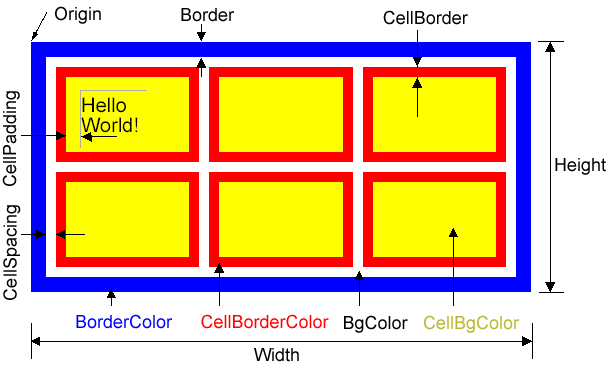

With AspPDF, you can create HTML-style tables and fill them with text
data. Once a table is created and filled, it can be rendered onto a canvas.
Tables are represented by the PdfTable object creatable
via the CreateTable method of the PdfDocument object.
PdfTable is a free-floating entity. It is not tied to a canvas, page
or any other object. Creating or changing a PdfTable object
has no effect on the appearance of the document until the table,
or any portion thereof, is rendered onto a canvas via the
Canvas.DrawTable method. The same table can be drawn on
multiple pages, or be part of one or more PdfGraphics objects.
7.1.1 Table Creation Parameters
The Doc.CreateTable method requires two parameters:
Width and Height (in default user units).
The number of columns and rows in the table
is specified via Cols and Rows, respectively.
These parameters are both 1 by default. When a table is created,
all rows and columns are spaced out evenly within the table.
A generic table has an outer border, and several
rows of cells. Each cell has a border of its own. Cells
are separated from each other and the outer border by
a margin. The following diagram illustrates various table
parameters:

A table's origin is located in the upper-left corner of the table. The
y axis still extends upwards, so all y-coordinates of the cells are negative.
Border is the width of the table's outer border (0 by default.)
CellBorder is the width of all cell borders (1 by default.)
CellSpacing is the width of a margin that separates
individual cells from each other and the outer border (0 by default).
CellPadding is the width of a margin within a cell that
separates text written in that cell from the cell's borders (0 by default.)
The table colors are specified by the following parameters: BorderColor
(the color of the outer border, black by default),
CellBorderColor (the color of all cell borders, black
by default), BgColor (the color of areas between cells, transparent by default),
and CellBgColor (the color of areas within cell borders, transparent by default).
As of Version 2.7, color spaces other than RGB can be used to
specify table colors.
See Section 15.4 - Using Color Spaces with PdfTable and Other Objects
for more information.
7.1.2 Working with Individual Rows and Cells
The PdfTable object provides the Rows property
which returns the PdfRows collection of PdfRow
objects representing individual table rows. The PdfRow object
allows you to change this row's height and move it up and down within
the table. It also allows you to change border and background
colors of all its cells via the BorderColor and BgColor properties.
The PdfRow object provides the Cells property which
returns the PdfCells collection of PdfCell
objects representing individual cells in a row.
The PdfCell object enables you to change the border
width, border color, background color, size, padding,
ColSpan and RowSpan of an individual cell.
An individual table cell can also be referenced
directly via PdfTable's default property At
by specifying 1-based row and cell indices as arguments, as follows:
Set Cell = Table.At(4, 2)
or simply
Set Cell = Table(4, 2)
Rows and Cells are numbered from left to right and from top to bottom.
Therefore, the upper-left cell of a table has the indices (1, 1).
The PdfCell object also provides the AddText method
for placing text in a cell. This method
is almost identical to Canvas.DrawText, except that instead of
the X, Y, Width and Height parameters
the cell coordinates and sizes are used, and two extra optional parameters,
IndentX and IndentY are added for
precise positioning of text inside the cell. This method also
uses an optional Expand parameter described below.
AddText's Font argument is optional but for it to be omitted,
you must specify a table-wide default font via the Table.Font
property.
The following code sample uses all the properties, methods
and collections described above to draw a chessboard. Here, we also
use a freeware symbol font Chess Merida residing in the file MERIFONT.TTF.
| VBScript |
' Create 8x8 table to depict a chessboard
Set Table = Doc.CreateTable( "width=200; height=200; rows=8; cols=8; border=1; cellborder=0; cellspacing=2")
' Select a Chess font to depict chess pieces
Set Font = Doc.Fonts.LoadFromFile( Server.MapPath("MERIFONT.TTF") )
Table.Font = Font
' initialize Pieces array
Dim Pieces
Pieces = Array(0,_
&HF074, &HF06D, &HF076, &HF077, &HF06C, &HF076, &HF06D, &HF074, _
&HF06F, &HF06F, &HF06F, &HF06F, &HF06F, &HF06F, &HF06F, &HF06F, _
&HF000, &HF000, &HF000, &HF000, &HF000, &HF000, &HF000, &HF000, _
&HF000, &HF000, &HF000, &HF000, &HF000, &HF000, &HF000, &HF000, _
&HF000, &HF000, &HF000, &HF000, &HF000, &HF000, &HF000, &HF000, _
&HF000, &HF000, &HF000, &HF000, &HF000, &HF000, &HF000, &HF000, _
&HF070, &HF070, &HF070, &HF070, &HF070, &HF070, &HF070, &HF070, _
&HF072, &HF06E, &HF062, &HF071, &HF06B, &HF062, &HF06E, &HF072 )
' go over all cells in the table
For Each Row in Table.Rows
For Each Cell in Row.Cells
' set background on cells which sum of indices is odd
If (Cell.Index + Row.Index) Mod 2 = 1 Then
Cell.BgColor = "brown"
End if
Piece = Pieces( 8 * (Row.Index - 1) + Cell.Index )
Cell.AddText ChrW(Piece), "size=20; indentx=1; indenty=1"
Next
Next
' Add a new page
Set Page = Doc.Pages.Add
Page.Canvas.DrawTable Table, "x=206, y=498"
|
| C# |
|
... // beginning omitted for brevity
// initialize Pieces array
int [] Pieces = {0,
0xF074, 0xF06D, 0xF076, 0xF077, 0xF06C, 0xF076, 0xF06D, 0xF074,
0xF06F, 0xF06F, 0xF06F, 0xF06F, 0xF06F, 0xF06F, 0xF06F, 0xF06F,
0xF000, 0xF000, 0xF000, 0xF000, 0xF000, 0xF000, 0xF000, 0xF000,
0xF000, 0xF000, 0xF000, 0xF000, 0xF000, 0xF000, 0xF000, 0xF000,
0xF000, 0xF000, 0xF000, 0xF000, 0xF000, 0xF000, 0xF000, 0xF000,
0xF000, 0xF000, 0xF000, 0xF000, 0xF000, 0xF000, 0xF000, 0xF000,
0xF070, 0xF070, 0xF070, 0xF070, 0xF070, 0xF070, 0xF070, 0xF070,
0xF072, 0xF06E, 0xF062, 0xF071, 0xF06B, 0xF062, 0xF06E, 0xF072 };
// go over all cells in the table
foreach( IPdfRow objRow in objTable.Rows )
{
foreach( IPdfCell objCell in objRow.Cells )
{
// set background on cells which sum of indices is odd
if( (objCell.Index + objRow.Index) % 2 == 1 )
objCell.BgColor = "brown";
int Piece = Pieces[ 8 * (objRow.Index - 1) + objCell.Index ];
objCell.AddText( ((char)Piece).ToString(), "size=20; indentx=1; indenty=1", Missing.Value );
}
}
... // end omitted for brevity
|
Click the links below to run this code sample:
http://localhost/asppdf/manual_07/07_chess.asp
http://localhost/asppdf/manual_07/07_chess.aspx

7.1.3 Cell Border Management
By default, each cell's border is a rectangle with all four sides
drawn in the same color (specified via Cell.BorderColor).
It is also possible to hide any, or all, of this rectangle's
sides, and also assign individual colors to each side.
Side visibility and coloring is set via PdfCell's SetBorderParams
method which accepts a PdfParam object or parameter string as an argument.
The following parameters can be used (all optional):
- Top, Bottom, Right, Left -
if set to False, hide the top, bottom, right or left side
of the cell border, respectively. True by default.
- TopColor, BottomColor, RightColor, LeftColor -
specify the line color for the top, bottom, right or left
side, respectively.
The following code fragment hides the left, top and right sides
of a cell and sets the bottom side color to green:
Table.At(1, 2).SetBorderParams "Left=False, Right=False, Top=False, BottomColor=Green"
7.1.4 Drawing in a Cell
The PdfCell object provides a Canvas property
which enables you to draw inside an individual cell
the same way you would on a page as a whole.
The coordinate space origin is located in the lower-left
corner of the cell. Cell.Canvas allows you to draw graphics, text and even
other tables inside a cell.
When a table is rendered onto a page, its cells' contents is rendered
in the following order:
1. Cell background.
2. The contents of Cell.Canvas, if any.
3. Text strings specified via Cell.AddText, if any.
4. Cell borders.
The following code fragment draws a small table inside a large table's
cell. The small table, in turn, has the word "Hello" drawn in its upper-left
cell.
Set SmallTable = Doc.CreateTable("Height=30; Width=30; cols=2; rows=2")
SmallTable.At(1, 1).Canvas.DrawText "Hello", "x=1, y=15; size=5", font
...
Table.At(1, 2).Canvas.DrawTable SmallTable, "x=2; y=50"
Note that unlike the Cell.AddText method, Cell.Canvas.DrawText does not affect
the size of the cell.